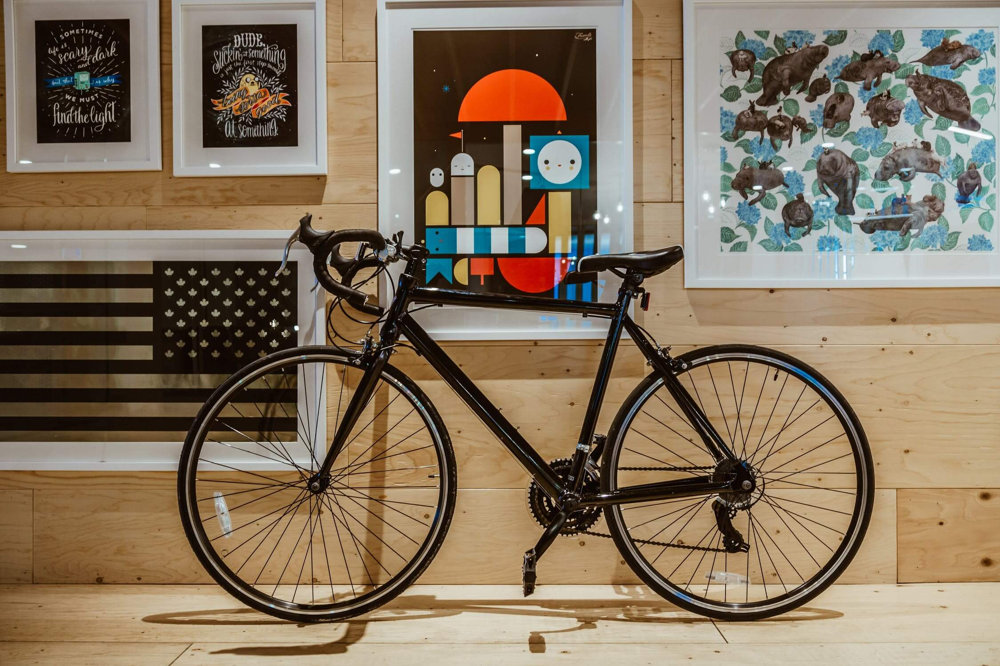
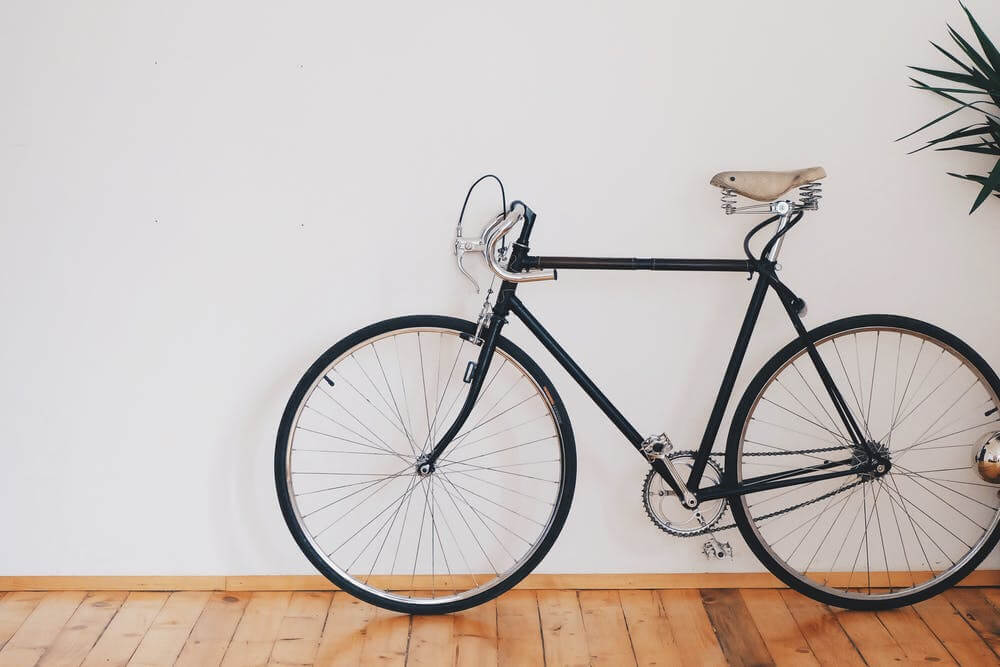
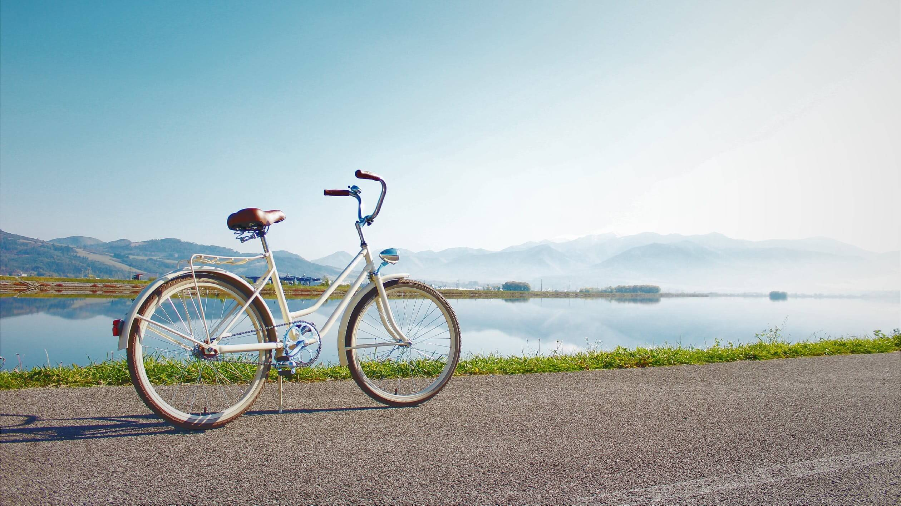
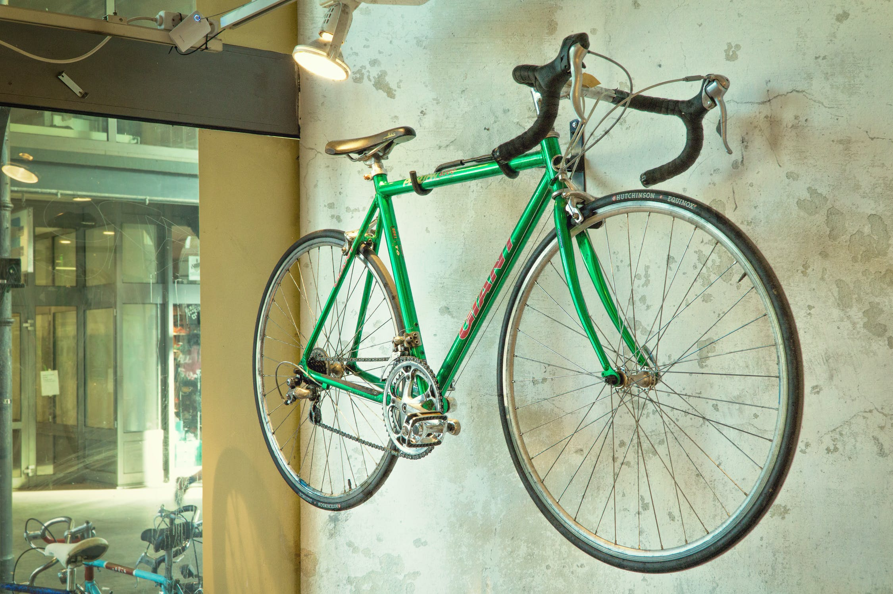
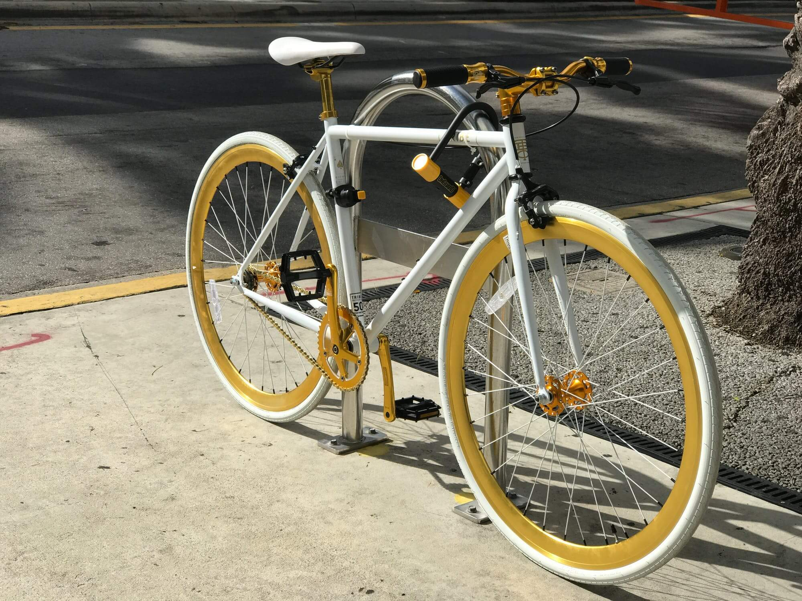
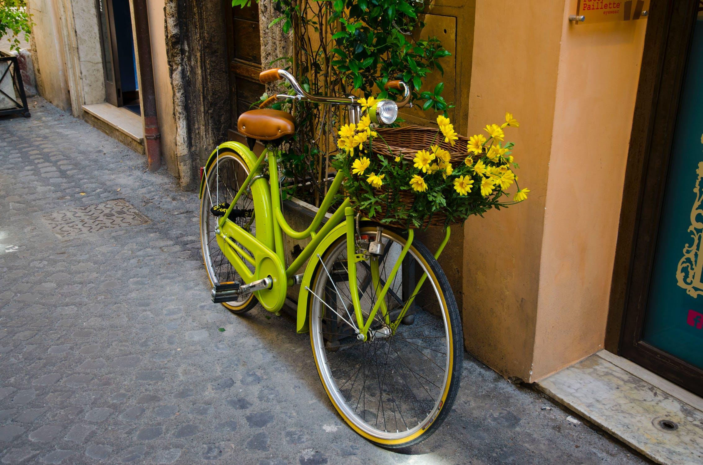
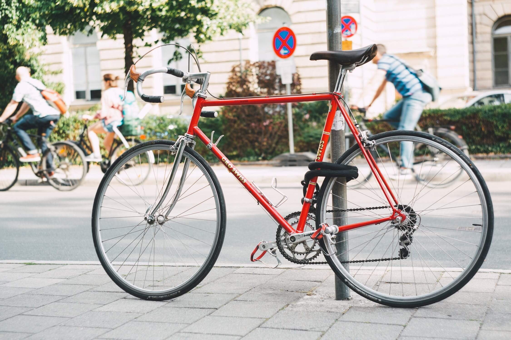
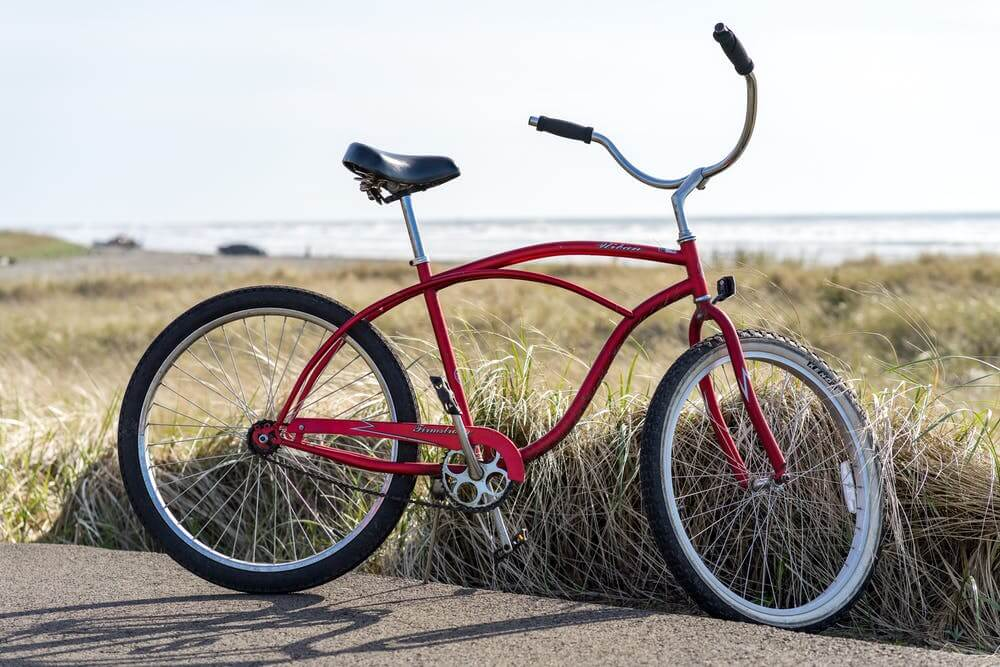

Our Beautiful Bikes
We've handpicked a few of our many wonderful bikes to give you an idea of the care and attention of our work. All of our bikes are custom-fit to each customer so drop by the shop to discover our whole collection and meet our friendly staff who are always on hand to advise you on the best bike for your needs. Don't forget that when it comes time for your bike's first service, it's on us!







